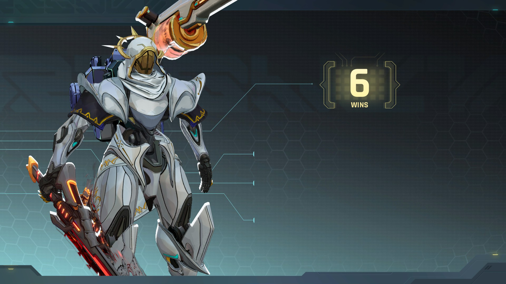

挑战赛逐日决策与结算
十天，6 胜 4 负。第 6 至第 9 天连胜，第 10 天第四次落败，进入整局结算。 末战 Lv.15、193,000 生命。整局成绩原图

首日购入肩武、背部，赢得第一个奖杯。第 2 天验证仓库换装、出售和跨卡镶嵌，输给带护盾和回复的对手。第 3 天从同一局的补给页继续，Lv.05、12,500 生命、49 金币。首日结算 · 次日结算 · 续玩起点


第 3 天 · 胜，累计 2 胜 1 负
补给三选一拿同名肩武，卡面伤害 460 → 785、寄生 15 → 22，原连槽保留。花 4 金币购入 B 级力量手武，花 32 金币买经验到七级，生命 30,000。对手 20,000 生命，仅带三件装备。预期双武器贡献主要输出。
结算手武 13,028，与明细首项一致；肩武 11,994。两者均有贡献，一场结果不能单独量出升级带来的增量。免费升级 · 对手 · 结算 · 统计


第 4 天 · 负，累计 2 胜 2 负
选随机 B 科技与 20 金币，得到所有防御装备护盾 +150% 的「守护核心 II」。升八级后以 8 金币买特价 A 级坚固背部，再花 8 金币买条件增伤件。调整卡序，让力量手武与背部连上，手武伤害 355 → 888，符合乘 2.5 后取整。余款用于升九级。
手武 31,373，肩武 15,820，结算最佳输出与统计一致。虽然手武打得更多，敌方效果累计产生 274,220 护盾，战斗结束时仍剩 223,969。累计获得量与结束时剩余量是两个指标。这场给下一次选敌的经验是查看高频叠坚固和获得护盾时的连锁效果。配件条件 · 装入结果 · 战斗结束时 · 伤害 · 防御


第 5 天 · 负，累计 2 胜 3 负
工程师将 B 级手武升为 A 级。放入改造栏时未镶嵌的面板为伤害 405、力量 2，改造后为 355、力量 3；跨卡配件退回仓库，需要重新接上。一次改造同时涉及品质、装备自身数值和之前的跨天成长，后续比较会保留升级前后裸卡截图。花 16 金币换上 A 级坚固无人机，重新排序，把主属性增幅和力量连到手武。持有 21 金币进入对抗，获得 4 金币利息。
手武 23,915、肩武 12,014，敌方燃烧一项为 65,139。结算最佳增益显示坚固 312，统计页的两个来源为 228 和 84，正好相加为 312。查单张装备时会低估总量。改造前 · 改造后 · 战前 · 结算 · 输出 · 增益明细


第 6 天 · 胜，累计 3 胜 3 负
只剩一次败场余量。我选每秒获得 8 层力量的科技，给依赖力量削减生命上限的手武供给力量。28 金币升十级，生命 72,000。另花 8 金币买坚固提供护盾的躯干，8 金币买寄生条件下主属性 +75% 的配件。把肩武、手武、背部、躯干、无人机依次排好，肩武与手武连寄生增幅，手武与背部保留伤害件，躯干另装护盾件。
倒计时从 45 到 41 秒时力量为 32，符合四次触发。结算力量 252，明细为科技 216 和手武 36。手武伤害 29,344。本场支持保留力量科技，但伤害还受对手和战斗长度影响。科技说明 · 装配 · 开战四秒 · 结算 · 分来源统计


第 7 天 · 胜，累计 4 胜 3 负
免费将坚固躯干升至 S，坚固 63 → 78，再装回单格护盾件。花 32 金币升十一级，花 8 金币把「使用时获得 320 护盾」装到背部。另花 8 金币买入并售出生命消耗品，生命 91,000 → 97,000。选敌时避开曾压制我的燃烧躯干，换到 30,000 生命的对手 EthOrlen。
手武的结算与伤害明细均为 27,928，收获 45 金币。升级与生命消耗品都在战前兑现，本场无法拆分两项对胜负各自的贡献。战前配置与生命 · 重掷后对手 · 结算 · 伤害明细


第 8 天 · 胜，累计 5 胜 3 负
放弃随机科技附带的 40 金币，自选「获得坚固时有 50% 几率给敌人施加 5 寄生」。花 36 金币升十二级，得到 118,000 生命。商店出现半价 S 级燃烧肩武，四连发，每次造成燃烧伤害又能充能 1.4 秒。花 16 金币替换原寄生肩武，把 +4 力量跨接到新肩武与手武。卖出三张 C 卡和闲置增幅件，再花 16 金币买下全面超频。该消耗品到第 9 天才确认生效。
日末手武 46,060、肩武 27,529。肩武的增益页列燃烧 864、力量 96，分别与同一组 24 次 × 36、24 次 × 4 相符。该卡底部另列 ×39，无法把这个字段直接当成命中数。肩武词条 · 战中状态 · 结算 · 输出 · 状态


第 9 天 · 胜，累计 6 胜 3 负
事件给三条路，其中挑战首领失败会扣命。我选 100 金币，花 84 金币连升两级，生命从 118,000 到 166,000。以 32 金币购入进攻装备伤害 +400% 的三格件，连接肩武与手武，肩武 170 → 850。卖掉备用肩武，凑 32 金币买燃烧躯干；旧躯干变现 16 金币，换特价力量无人机，每台提供 14% 吸血。上日消耗品从仓库售出后，肩武冷却 9.5 → 9.1 秒。
对手 56,000 生命。力量无人机在防御页贡献 40,736 治疗，手武 32,419、肩武 26,497 伤害。治疗数据支持保留这架无人机。首领与金币选择 · 配件 · 冷却与肩武面板 · 战前 · 结算 · 伤害 · 治疗


第 10 天 · 负，整局 6 胜 4 负
选择随机 SS 科技和 50 金币，花 48 金币升至上限 Lv.15、193,000 生命。另花 48 金币购买「生命偷取」长配件，词条为进攻装备攻击段数 +6。拆下力量条件增伤件，从肩武上排接到手武上排，中排保留 +400% 伤害。肩武从 4 段变 10 段，手武从 3 段变 9 段，后者的单段面板也随拆件下降。上排空出后 · 双武器与对手


我重掷掉高燃烧对手，留下 42,000 生命的 huerowakame。对方 S 级手武「虚空撕裂」会把损失护盾的 12% 转为伤害，末战卡面已达 29.2K、7 段，伤害统计单件 230,984。我方手武 35,796、肩武 30,085，无人机治疗 46,091。以后查看敌人时，遇到护盾转伤、状态充能或多段触发，要把触发来源和段数一起读完，再决定是否保留。
结算把燃烧 659 列为最佳增益，来源页可重算为肩武 432、科技 156、躯干 71。汇总与明细一致。不同战斗的长度、敌方减速和目标状态都会影响伤害，本局无法给「+6 段」估计独立胜率。另归档了同一肩武在卡面和说明里的伤害差异，尚未验证实际每击采用哪个值。末战结算 · 双方伤害 · 双方防御 · 状态来源 · 敌方手武词条 · 卡面读数报告



终局五件装备，配件花在哪里
我把两枚最贵的配件叠在同一对进攻装备上，确实漏评了高品质支援位。只看输出榜会低估无人机，单看空槽数也无法决定把哪件配件拆过去。终局卡序与插槽原图
- S 肩武、A 手武
- 两枚跨卡件都接到这两张卡。上排给两者各加 6 段，下排给进攻装备加 400% 伤害。肩武从 4 到 10 段，手武从 3 到 9 段。两张牌都吃到对应收益。
- A 背部、S 躯干
- 背部有使用时获得 320 护盾的单格件。燃烧躯干只有一枚护盾件，提供护盾，也让每层燃烧多造成 1 点伤害。下次有合适配件时先验证它能放大护盾、燃烧层数还是触发频率。
- S 力量无人机
- 空槽。每 8 秒召唤一台，每台提供 14% 吸血。两场战报分别记了 40,736 和 46,091 治疗。以后优先试能让第一台更早出现、或在关键时间窗多召一台的配件，再和武器失去的增幅比较。第 9 天 · 第 10 天
末战对手提供了一个换位参照。他把无人机紧挨手武，手武另一侧接肩武，三张卡之间可见多条横向连接。我的无人机在最右，与两个主要进攻位之间隔着背部和躯干。下局先试「躯干—无人机—手武」或反向顺序，分别核对兼容词条、端点高度和原有武器连线，记录重新排列后实际保住了哪些效果。双方的五张卡和连线
双方战力怎么估
双方各填三项。① 第一轮能打多少，以及第几秒能打出来。② 第 10 秒和第 20 秒有哪些技能能再触发，护盾、治疗与持续伤害能积到多少。③ 哪条被动会改变前两项，例如我方燃烧让肩武重新充能，敌方失盾让手武每击增伤。缺少触发间隔或来源时保留上下限。战后用实际来源修正预测。
值得追的循环 自己的肩武「施加燃烧 → 燃烧造成伤害 → 肩武充能 1.4 秒 → 更快再次施加燃烧」，需要首轮武器启动、目标仍有燃烧。对手已经证实的是「失盾 → 手武增伤」。要确认它能否闭环，下一步是找「攻击 → 产盾」的来源以及可触发的间隔。己方肩武 · 敌方手武
卖装备、买经验和留利息
玩家给出的基础规则是每满 10 金币多 1 利息，最多 5。下面将战前余额与结算中独立列出的「利息」对齐。基础规则的直接计算与本局三个样本有差异。
| 游戏日 | 战前余额 | 按基础规则 | 实收利息 |
|---|---|---|---|
| 第 5 天 | 21 | 2 | 4 |
| 第 7 天 | 13 | 1 | 2 |
| 第 10 天 | 5 | 0 | 1 |
第二局已在金币悬停说明中确认，本版本每满 5 金币结算 1 利息，上限 10。首日携带 10 金币，实收利息 2，和说明一致。这也解释首局的三组读数。比较购买时同时记本次花费、卖出闲置件可得金币、能否升整级、会少赚几档利息。本版本利息原文 · 第二局对账